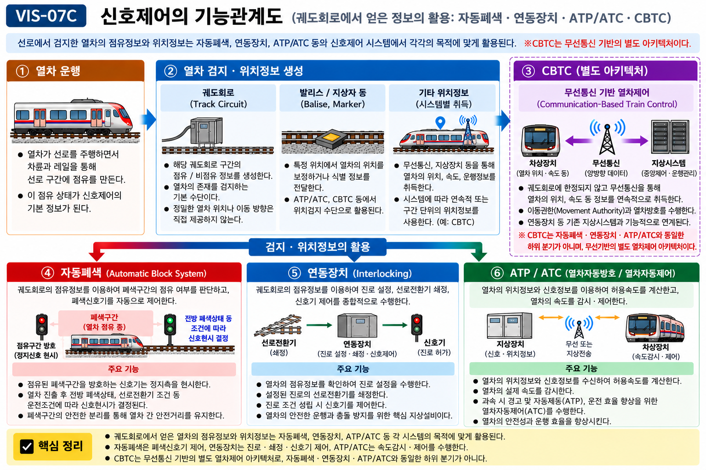

§ 3. 폐색 정의 · 폐색구간 · 폐색장치 ⚠️ 빈출
개념 D 폐색(Block)의 정의와 구성
폐색(Block): 일정 구간에 동시에 2 이상의 열차를 운전시키지 않도록 그 구간을 하나의 열차 운전에 점용시키는 운전보안 개념.
→ 핵심: "선로 구분 + 진입 제어" 두 가지가 함께 있어야 폐색.
폐색구간(Block Section): 안전한 열차 간격 확보를 위해 하나의 점유 단위로 관리되는 선로 구간. 한 폐색구간에는 원칙적으로 1열차만 진입할 수 있다.
폐색장치(Block Equipment): 폐색구간의 점유 여부를 확인하고 진입을 제어하는 장치. 궤도회로·신호기·연동장치 등이 유기적으로 구성.
폐색구간 설치 기준 (개념 75 기준)
폐색구간의 최소 길이 = 최대 제동거리 + 안전여유거리. 열차가 폐색신호기의 정지 현시를 인식한 후 안전하게 정지할 수 있는 충분한 거리가 확보되어야 한다.
폐색신호기(Block Signal): 폐색구간에 진입하려는 열차에 신호를 현시하는 주신호기. 교재에서는 자동폐색신호기를 대표적인 허용신호기로 설명하지만, 정지신호를 지나 운전하는 세부 절차·제한속도는 적용 규정과 운영기준을 따라야 한다.
🔗 CROSS-REF: 허용신호기 vs 절대신호기 구분 → 신호기 종류 단원 참조 (개념 45 계열)
🔗 CROSS-REF: 폐색장치의 핵심 — 궤도회로 → 07-06 궤도회로 참조
§ 4. 상용폐색방식 (Normal Block) — 출처별 분리 ⚠️ 빈출
개념 E 상용폐색 — 정상 운행 시 사용하는 폐색방식
⚠️ 시험 핵심 함정: 일반철도(KRIC) 기준과 도시철도운전규칙 기준의 분류가 다르다. 두 체계를 혼합하면 오답. 반드시 출처별로 분리해서 암기.
① 철도차량운전규칙 기준
| 상용폐색 방식 |
원리 |
주요 적용 구간 |
| 자동폐색식 |
궤도회로 열차점유 자동검지 → 폐색신호기 자동현시 |
복선·전철 구간 |
| 연동폐색식 |
인접 역 간 전화(전령)·연동으로 폐색 허가 취득. 폐색취급원 필요. |
단선 구간 |
| 차내신호폐색식 |
지상 신호기 없이 차내(Cab) 신호로 운전제어. ATC 연동. |
고속선·ATC 구간 |
| 통표폐색식 |
통표(Token) 물리적 소지 열차만 해당 구간 진입 허가 |
단선·비전철 구간 |
② 도시철도운전규칙 기준
| 상용폐색 방식 |
설명 |
| 자동폐색식 |
궤도회로 점유검지 기반 자동 신호현시 |
| 차내신호폐색식 |
차내신호(ATC 계열)로 운전제어. 지상신호기 불필요. |
왜 두 기준이 다른가?
일반철도는 단선·복선·전철·비전철·고속 등 다양한 노선 조건을 포함하므로 분류가 더 넓다. 도시철도는 대부분 복선·전철·ATC/ATO 환경이므로 자동폐색식과 차내신호폐색식만을 상용폐색으로 규정한다.
💡 암기 포인트: 일반철도 상용폐색 = 자·연·차·통 (자동/연동/차내신호/통표). 도시철도 상용폐색 = 자·차 (자동/차내신호).
§ 5. 대용폐색방식 (Substitute Block) — 출처별 분리
개념 F 대용폐색 — 상용폐색 장치 고장·사용 불능 시 대체 사용
대용폐색이란: 상용폐색 장치(자동폐색, 차내신호폐색 등)가 고장나거나 사용할 수 없을 때 임시로 사용하는 폐색방식. 일반적으로 인위적 확인 절차가 더 필요하고 운전 효율이 낮다.
① 철도차량운전규칙 기준
| 대용폐색 방식 |
원리 |
| 통신식 |
전화 등 통신수단으로 인접역 간 폐색 허가 취득 |
| 지도통신식 |
지도표(증표)와 통신을 함께 사용하여 폐색 허가 |
| 지도식 |
지도표(증표)를 사용하여 열차의 폐색구간 진입을 통제 |
| 지령식 |
관제사의 지령에 따라 폐색구간 진입을 통제 |
② 도시철도운전규칙 기준
| 대용폐색 방식 |
설명 |
| 지령식 |
복선운전 시 사용 가능 — 관제사가 폐색구간 진입을 지시 |
| 통신식 |
복선운전 시 사용 가능 — 관계 역·소와 관제사가 협의하여 진입을 통제 |
| 지도통신식 |
단선운전 시 사용 — 지도표·지도권과 통신 절차를 이용 |
⚠️ 최신 기준 주의: 지령식은 도시철도에만 있는 방식이 아니다. 「철도차량운전규칙」의 대용폐색방식에도 지령식이 포함된다. 도시철도는 복선=지령식 또는 통신식, 단선=지도통신식으로 구분한다.
§ 6. 자동폐색장치 (Automatic Block System) ⚠️ 빈출
개념 G 자동폐색의 동작 원리
자동폐색 정의: 열차 점유검지에 따라 폐색신호가 자동으로 제어되는 폐색방식.
→ 폐색취급원 없이 열차·신호기가 자동으로 폐색을 처리.
동작 흐름 (초학자 설명)
- 열차 진입: 열차가 폐색구간에 진입한다.
- 궤도회로 점유검지: 열차의 차륜·차축이 두 레일을 단락(shunt)시켜 궤도회로에 전류 변화 발생 → 궤도계전기 상태 변화 → 해당 폐색구간 점유로 판정.
- 폐색구간 점유정보 생성: 점유 판정 결과가 신호 제어계통에 전달된다.
- 폐색신호기 제어: 점유 중인 폐색구간 앞에 설치된 폐색신호기가 정지 현시 → 뒤따르는 열차 진입 차단.
- 열차 진출 후 해정: 열차가 폐색구간을 완전히 벗어나면 점유가 해소된다. 이후 신호 현시는 전방 폐색구간 점유, 선로전환기 상태, 장치 고장 여부 등 다른 안전조건을 함께 만족할 때 결정된다.
⚠️ 직접 등치 금지 표현:
· "계전기 여자 = 진행신호" — 여자 상태는 비점유 정보를 출력하는 것이며, 신호기 현시는 연동장치 등 다른 조건과 함께 결정된다.
· "궤도계전기 낙하(무여자) = 반드시 열차 있음" — 전원상실·레일단선·접촉불량 등 고장에서도 무여자 발생. Fail-Safe 원칙에 의해 무여자→안전측 제어.

VIS-07A · 궤도회로 동작 비교도 — 비점유 상태 vs 점유 상태
🔗 CROSS-REF: 궤도회로 원리 → 07-06 궤도회로 참조 (개념 95 계열)
🔗 CROSS-REF: Fail-Safe 원칙 → 무여자 = 안전측 제어 (개념 101 계열)
폐색신호기의 성격 — 허용신호기
자동폐색구간의 폐색신호기는 허용신호기이다. 정지 현시 시 운전자가 규정 속도(보통 15km/h 이하) 이하로 전방을 확인하며 진행할 수 있다. 장내·출발신호기(절대신호기)와 구별된다.
§ 7. 연동폐색식 (Interlocking Block System) — 연동장치와 반드시 구분
개념 H 연동폐색식의 정의와 동작
⚠️ 핵심 혼동 방지:
· 연동장치(Interlocking) = 역 구내에서 신호기·선로전환기·폐색장치를 상호 연결하여 잘못된 동시조작을 방지하는 장치·시스템 → 07-08 참조
· 연동폐색식(Interlocking Block) = 연동폐색기와 신호기를 연동하고 상대 정거장·신호소의 승인을 받아 진입시키는 폐색방식
→ 이름이 비슷하지만 완전히 다른 개념. 절대로 혼용 금지.
연동폐색식 정의: 폐색구간 양끝의 정거장 또는 신호소에 설치된 연동폐색기와 신호기를 연동하여 열차 유무를 표시하고, 상대 정거장 또는 신호소의 승인을 받아 열차를 폐색구간에 진입시키는 상용폐색방식.
| 항목 | 내용 |
|---|
| 진입 전 확인 | “폐색구간에 열차 없음” 표시를 확인하고 전방 정거장 또는 신호소의 승인을 받는다. |
| 승인 표시 | 승인은 연동폐색기의 “폐색구간에 열차 있음” 표시로 한다. |
| 안전조건 | 열차가 폐색구간에 있으면 해당 구간 신호기에 진행을 지시하는 신호를 현시할 수 없다. |
| 단선구간 추가조건 | 한 방향에 폐색이 이루어지면 반대방향 신호기는 자동으로 정지신호를 현시한다. |
| 법령상 분류 | 「철도차량운전규칙」 제50조의 상용폐색방식 중 하나. |
| 도시철도운전규칙 | 상용폐색방식으로 자동폐색식·차내신호폐색식만 규정하므로 연동폐색식은 해당 분류에 포함되지 않는다. |
🔗 CROSS-REF: 연동장치(Interlocking) 전체 내용 → 07-08 단원 참조
§ 8. 고정폐색 vs 이동폐색 — 폐색 구조의 진화
개념 I 고정폐색 (Fixed Block)
정의: 선로를 미리 정한 고정된 구간으로 나누고, 각 구간 점유 여부에 따라 열차 간격을 제어하는 방식.
경계: 신호기·궤도회로 경계 등 미리 정해진 물리적 또는 논리적 위치로 구분된다.
특징: 자동폐색식이 고정폐색의 대표적 구현. 폐색구간의 위치와 크기가 고정되어 있으며 열차 실제 위치와 무관하게 구간 단위로 점유 여부를 판단.
고정폐색의 간격 한계
폐색구간이 크면 열차 간격이 넓어져 선로 용량 감소. 구간이 작으면 신호기·궤도회로 설비 수가 늘어나 비용 증가. 설계 시 균형이 필요.
개념 J 이동폐색 (Moving Block)
정의: 선행열차의 실제 위치와 속도, 제동성능 등을 반영해 안전한계가 열차와 함께 이동하는 방식.
필수 정보: 열차의 실시간 위치·속도와 안전제동 관련 정보가 지속적으로 필요하다.
장점: 고정된 구간 없이 실제 열차 위치 기준으로 간격 제어 → 열차 간격을 더 촘촘하게 유지 가능 → 선로 용량 증가.
이동폐색 구현 기술
CBTC(Communication Based Train Control): 양방향 무선통신과 정밀 위치정보를 이용해 이동폐색 구현에 유리한 열차제어 방식.
KTCS-3: 궤도회로를 사용하지 않는 이동폐색 기술을 핵심 방향으로 한다.
※ GPS를 이동폐색의 일반적 위치검지 수단으로 일반화하지 않는다. 구체적 방식은 시스템별로 차이가 있다.

images/VIS-07C_신호제어_기능관계도_FINAL.png
이미지 로드 실패 — 파일 경로 확인 필요
|
고정폐색 |
이동폐색 |
| 폐색구간 |
미리 정해진 고정 구간 |
열차 위치에 따라 동적으로 변화 |
| 위치 확인 |
구간 단위(궤도회로 점유) |
열차 실시간 위치 |
| 선로 용량 |
구간 크기에 제한됨 |
상대적으로 높음 |
| 대표 기술 |
자동폐색식, 연동폐색식 |
CBTC, KTCS-3(무선기반) |
🔗 CROSS-REF: 점유정보 획득 원리 → 07-06 궤도회로 (개념 95, VIS-07A)
🔗 CROSS-REF: CBTC 상세 → 07-05 열차제어 단원 참조
§ 10. 기출 DB 수록 문제 — 신호 DB Part 4
Q1 · sig_076 · Part 4 · 등급 S · 출처: 철도신호 기출 DB
다음 설명에 해당하는 용어로 가장 적절한 것은?
"일정 구간에 동시에 2 이상의 열차를 운전시키지 않도록 그 구간을 하나의 열차 운전에 점용시키는 운전보안 개념이다."
① 폐색
② 제동거리
③ 이동폐색의 필수 정보
④ 안전간격
Q2 · sig_077 · Part 4 · 등급 S · 출처: 철도신호 기출 DB
다음 중 「폐색」에 대한 설명으로 옳은 것은?
① 일정 구간에 동시에 2 이상의 열차를 운전시키지 않도록 그 구간을 하나의 열차 운전에 점용시키는 운전보안 개념이다.
② 일정 시간 동안 안전하게 처리할 수 있는 열차 수로, 운전시격이 짧아질수록 증가할 수 있다.
③ 선행열차의 실제 위치와 속도, 제동성능 등을 반영해 안전한계가 열차와 함께 이동하는 방식이다.
④ 신호기·궤도회로 경계 등 미리 정해진 물리적 또는 논리적 위치로 구분된다.
Q3 · sig_078 · Part 4 · 등급 A+ · 출처: 철도신호 기출 DB
다음 설명에 해당하는 용어로 가장 적절한 것은?
"안전한 열차 간격 확보를 위해 하나의 점유 단위로 관리되는 선로 구간이다."
① 폐색구간
② CBTC와 이동폐색
③ 폐색
④ 고정폐색
Q4 · sig_080 · Part 4 · 등급 S · 출처: 철도신호 기출 DB
다음 설명에 해당하는 용어로 가장 적절한 것은?
"선로를 미리 정한 고정된 구간으로 나누고 각 구간 점유 여부에 따라 열차 간격을 제어하는 방식이다."
① 폐색구간
② 선로용량
③ 고정폐색
④ 제동거리
Q5 · sig_081 · Part 4 · 등급 S · 출처: 철도신호 기출 DB
다음 중 「고정폐색」에 대한 설명으로 옳은 것은?
① 선로를 미리 정한 고정된 구간으로 나누고 각 구간 점유 여부에 따라 열차 간격을 제어하는 방식이다.
② 같은 지점을 연속 열차가 통과하는 시간 간격을 뜻하며 선로용량과 밀접하다.
③ CBTC는 양방향 무선통신과 정밀 위치정보를 이용해 이동폐색 구현에 유리한 열차제어 방식이다.
④ 열차 점유검지에 따라 폐색신호가 자동으로 제어되는 폐색방식이다.
Q6 · sig_082 · Part 4 · 등급 S · 출처: 철도신호 기출 DB
다음 설명에 해당하는 용어로 가장 적절한 것은?
"선행열차의 실제 위치와 속도, 제동성능 등을 반영해 안전한계가 열차와 함께 이동하는 방식이다."
① 고정폐색
② CBTC와 이동폐색
③ 이동폐색
④ 고정폐색의 경계
Q7 · sig_084 · Part 4 · 등급 A+ · 출처: 철도신호 기출 DB
다음 설명에 해당하는 용어로 가장 적절한 것은?
"열차 점유검지에 따라 폐색신호가 자동으로 제어되는 폐색방식이다."
① 선로용량
② 고정폐색의 경계
③ KTCS-3와 이동폐색
④ 자동폐색
Q8 · sig_085 · Part 4 · 등급 A+ · 출처: 철도신호 기출 DB
다음 중 「자동폐색」에 대한 설명으로 옳은 것은?
① 열차의 실시간 위치·속도와 안전제동 관련 정보가 지속적으로 필요하다.
② 열차 점유검지에 따라 폐색신호가 자동으로 제어되는 폐색방식이다.
③ KTCS-3는 궤도회로를 사용하지 않는 이동폐색 기술을 핵심 방향으로 한다.
④ 신호기·궤도회로 경계 등 미리 정해진 물리적 또는 논리적 위치로 구분된다.
Q9 · sig_083 · Part 4 · 등급 S · 출처: 철도신호 기출 DB
다음 중 「이동폐색」의 정의를 가장 직접적으로 설명한 것은?
① 열차의 실시간 위치·속도와 안전제동 관련 정보가 지속적으로 필요하다.
② 선행열차의 실제 위치와 속도, 제동성능 등을 반영해 안전한계가 열차와 함께 이동하는 방식이다.
③ 신호기·궤도회로 경계 등 미리 정해진 물리적 또는 논리적 위치로 구분된다.
④ 선로를 미리 정한 고정된 구간으로 나누고 각 구간 점유 여부에 따라 열차 간격을 제어하는 방식이다.
Q10 · sig_086 · Part 4 · 등급 A+ · 출처: 철도신호 기출 DB
다음 설명에 해당하는 용어로 가장 적절한 것은?
"후속열차가 선행열차와 충돌하지 않도록 제동거리 등을 반영해 확보하는 거리 또는 시간 여유이다."
① 안전간격
② 고정폐색의 경계
③ 제동거리
④ 폐색구간
§ 11. 정답 및 해설
Q1 · sig_076
정답: ①번 — 폐색
일정 구간에 동시에 2 이상의 열차를 운전시키지 않도록 그 구간을 하나의 열차 운전에 점용시키는 운전보안 개념이 폐색(Block)의 정의다.
Q2 · sig_077
정답: ①번
①이 폐색의 정의. ②는 선로용량, ③은 이동폐색, ④는 고정폐색의 경계에 대한 설명.
Q3 · sig_078
정답: ①번 — 폐색구간
하나의 점유 단위로 관리되는 선로 구간 = 폐색구간(Block Section).
Q4 · sig_080
정답: ③번 — 고정폐색
미리 정한 고정된 구간으로 나누어 점유 여부에 따라 제어하는 방식 = 고정폐색(Fixed Block).
Q5 · sig_081
정답: ①번
①이 고정폐색의 정의. ②는 운전시격(Headway), ③은 CBTC, ④는 자동폐색식 설명.
Q6 · sig_082
정답: ③번 — 이동폐색
선행열차의 실제 위치·속도·제동성능을 반영해 안전한계가 열차와 함께 이동 = 이동폐색(Moving Block).
Q7 · sig_084
정답: ④번 — 자동폐색
열차 점유검지에 따라 폐색신호가 자동으로 제어 = 자동폐색식(Automatic Block System).
Q8 · sig_085
정답: ②번
②가 자동폐색의 정의. ①은 이동폐색의 필수 정보(실시간 위치·속도), ③은 KTCS-3, ④는 고정폐색의 경계 설명.
Q9 · sig_083
정답: ②번
②가 이동폐색의 정의. ①은 이동폐색의 필수 정보(실시간 위치·속도)로 이동폐색을 구현하기 위해 필요한 것이고, 이동폐색 자체의 정의는 ②가 더 직접적.
Q10 · sig_086
정답: ①번 — 안전간격
후속열차가 선행열차와 충돌하지 않도록 제동거리 등을 반영해 확보하는 거리 또는 시간 여유 = 안전간격.